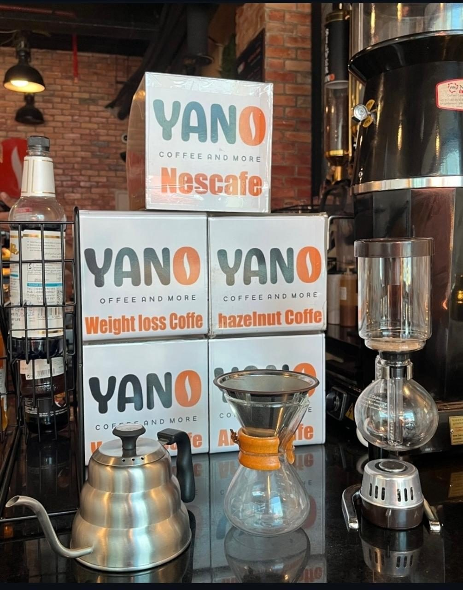
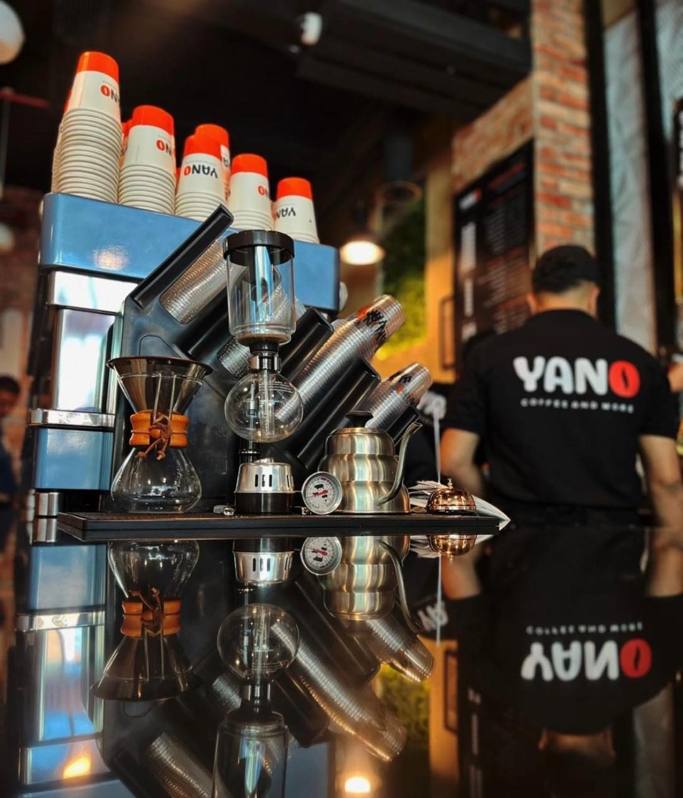

Since day one
A counter, a grinder, and a lot of regulars.
Yano started with one idea: a cup you would order twice. The coffee came first, then the juice, then the frappés — because people kept sitting longer than one drink lasts.

How a Yano cup is made
Four steps, same order, every single time.
Filter the water
Fresh, filtered water balanced against the coffee. A brew can only be as clean as what it starts with.
Weigh the ratio
Coffee to water, measured rather than guessed, so the same drink tastes the same tomorrow.
Match the grind
Coarse for the pour-over, fine for espresso. The grind is what decides sour, sweet or bitter.
Grind it now
Beans stay sealed until the order lands. Ground coffee loses its aroma faster than anyone likes to admit.
